Under double-blind review at ICLR 2027
Single-Step 3D Reconstruction via Geometry-Conditioned Rectified Transport
Overview
Rectified geometric flow for fast, data-efficient reconstruction
The deployment of high-fidelity single-view 3D reconstruction is currently stalled by the limitations of denoising diffusion probabilistic models (DDPMs). Despite their generation quality, DDPMs suffer from prohibitive latency due to iterative sampling and can converge unreliably in data-scarce regimes.
We introduce rectified geometric flow (RGF), a method that bypasses these bottlenecks by replacing stochastic diffusion with deterministic, straight-line ODE trajectories. This linearization is not merely an efficiency trick but simplifies the generative mapping, enabling robust learning on scarce data.
To prevent structural degradation during rapid generation, we integrate geometric injection as an explicit 3D scaffold and align local features through intrinsic manifold transport. In a matched comparison with the recent Point Diffusion Mamba (PDM) baseline, RGF achieves lower Chamfer Distance (CD) in 9 of 12 category settings and higher F1 in 9 of 12 (with one tie). On an RTX 3090, RGF takes 1.825 s per sample versus 20.73 s for PDM (11.4x faster), while using 3.46 GB rather than PDM's 0.39 GB of GPU memory.
Method overview and efficiency frontier
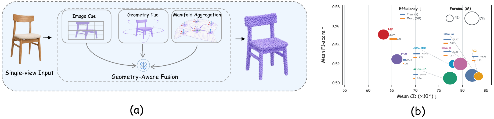
Qualitative reconstruction
Airplane
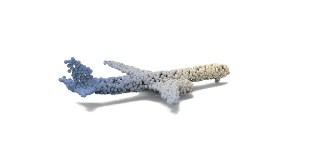
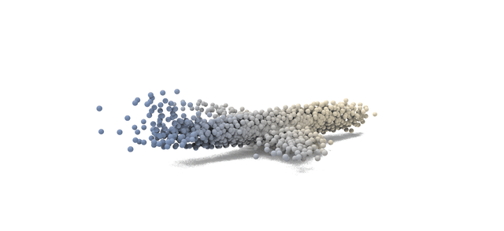
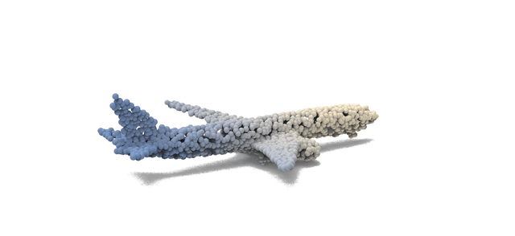
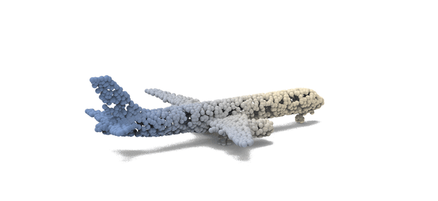
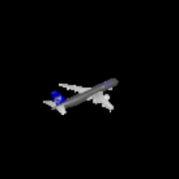
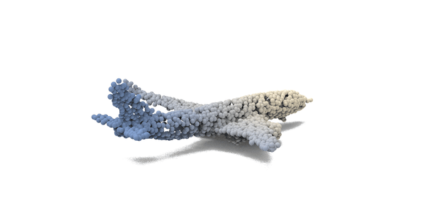
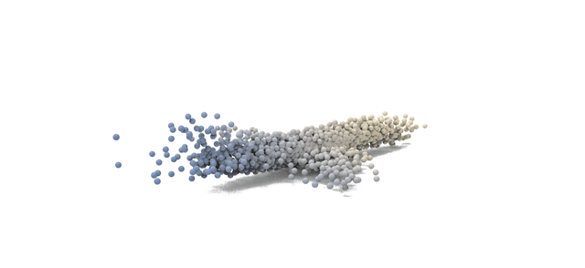
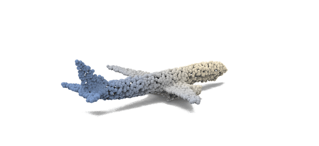
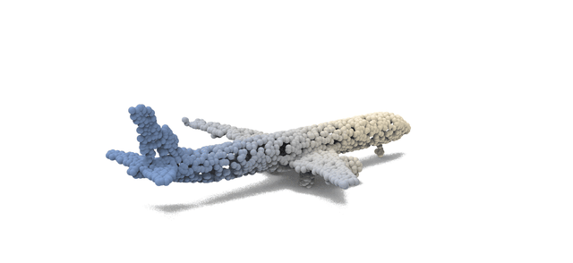
Car
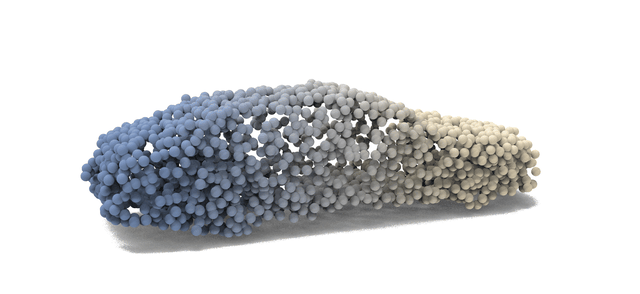
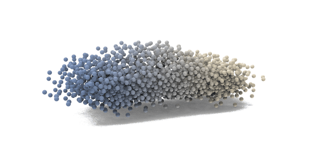
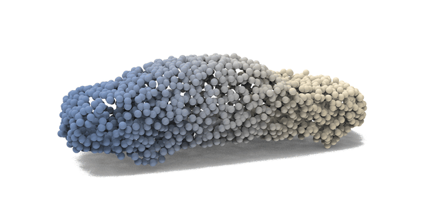
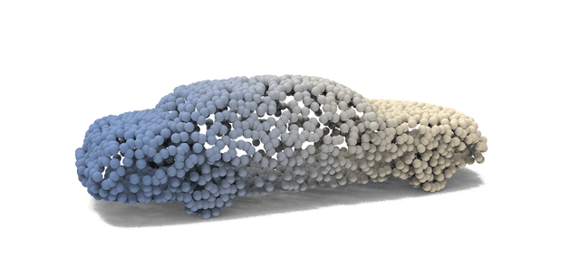
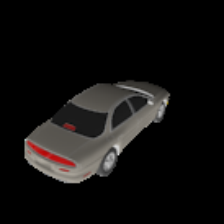
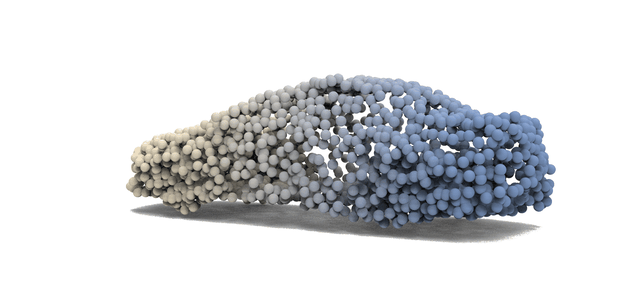
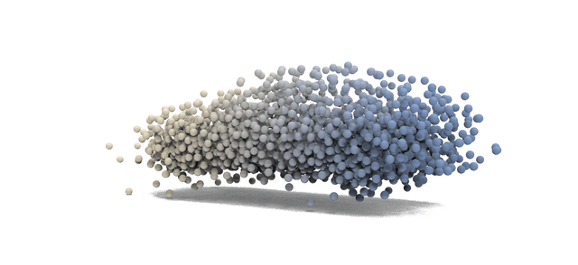
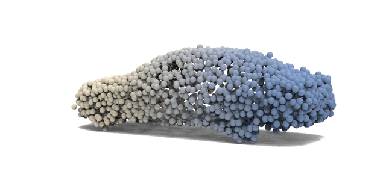
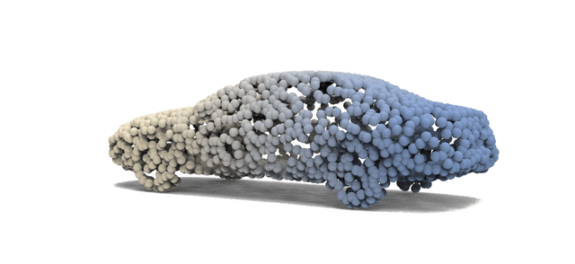
Chair
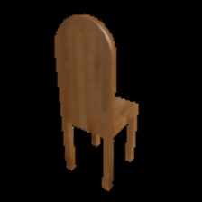
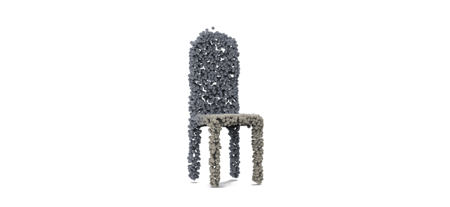
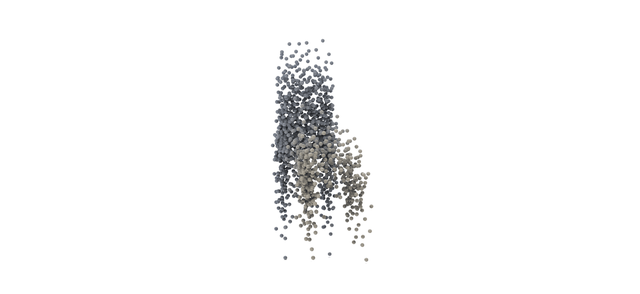
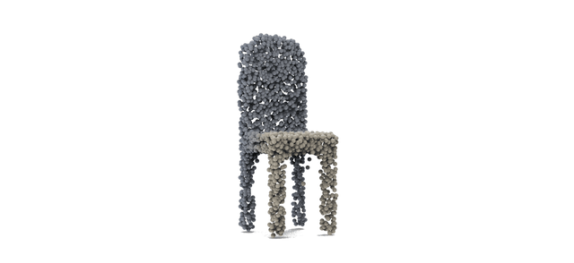
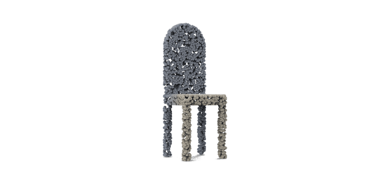
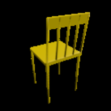
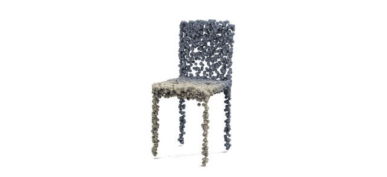
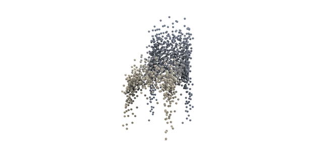
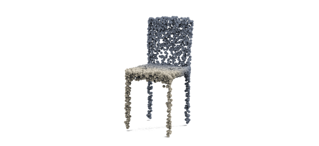
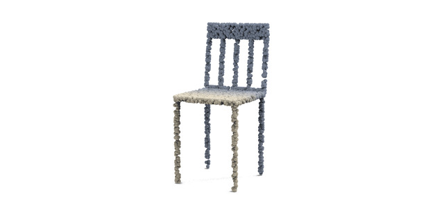
Quantitative results
ShapeNet-R2N2 reconstruction results
| Method | Chair | Airplane | Car | |||||||||||||||
|---|---|---|---|---|---|---|---|---|---|---|---|---|---|---|---|---|---|---|
| 10% | 50% | 100% | 10% | 50% | 100% | 10% | 50% | 100% | ||||||||||
| CD | F1 | CD | F1 | CD | F1 | CD | F1 | CD | F1 | CD | F1 | CD | F1 | CD | F1 | CD | F1 | |
| PC2 (CVPR 23) | 97.25 | 0.393 | 73.58 | 0.437 | 65.57 | 0.464 | 88.00 | 0.605 | 76.39 | 0.628 | 65.97 | 0.655 | 64.99 | 0.524 | 62.59 | 0.542 | 64.36 | 0.547 |
| CCD-3DR (ArXiv 23) | 89.79 | 0.418 | 63.13 | 0.474 | 58.47 | 0.498 | 81.29 | 0.612 | 72.46 | 0.635 | 62.77 | 0.651 | 63.13 | 0.531 | 62.25 | 0.550 | 61.88 | 0.562 |
| BDM-M (CVPR 24) | 94.94 | 0.395 | 71.56 | 0.446 | 64.48 | 0.468 | 87.75 | 0.604 | 73.19 | 0.629 | 65.16 | 0.653 | 63.53 | 0.524 | 60.71 | 0.549 | 64.16 | 0.554 |
| BDM-B (CVPR 24) | 94.67 | 0.410 | 69.99 | 0.463 | 64.21 | 0.485 | 83.62 | 0.612 | 68.66 | 0.641 | 59.04 | 0.660 | 60.48 | 0.539 | 62.58 | 0.554 | 65.85 | 0.559 |
| MESC-3D (CVPR 25) | 101.51 | 0.381 | 73.47 | 0.427 | 65.69 | 0.458 | 74.31 | 0.611 | 51.28 | 0.619 | 50.54 | 0.714 | 56.28 | 0.522 | 44.48 | 0.532 | 51.99 | 0.602 |
| PDM (ECCV 26) | 82.41 | 0.419 | 68.85 | 0.465 | 62.14 | 0.488 | 60.64 | 0.614 | 50.14 | 0.663 | 48.66 | 0.719 | 55.23 | 0.542 | 55.53 | 0.558 | 51.54 | 0.607 |
| RGF (Ours) | 76.39 | 0.437 | 58.46 | 0.478 | 56.24 | 0.488 | 57.30 | 0.669 | 44.71 | 0.711 | 40.60 | 0.713 | 56.00 | 0.547 | 51.49 | 0.581 | 53.12 | 0.578 |
Table 1. Quantitative comparison on ShapeNet-R2N2 across training-data regimes. CD is lower-is-better; F1 is higher-is-better. Bold marks the best value and underlining marks the second-best value within each metric column.
Additional visualizations
Geometry-aware reconstruction details
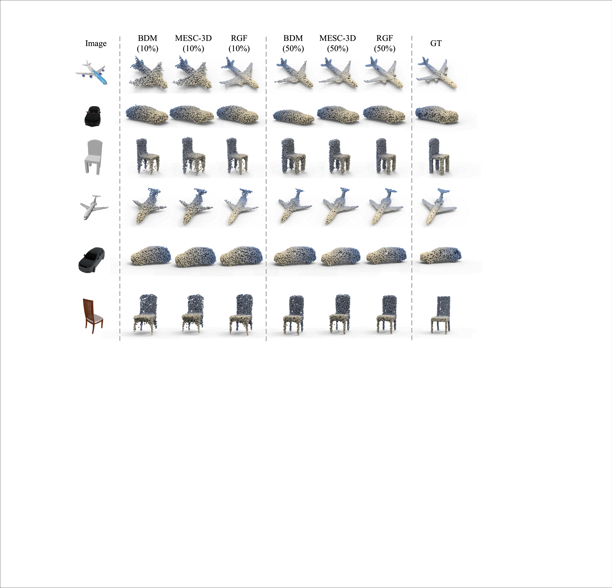
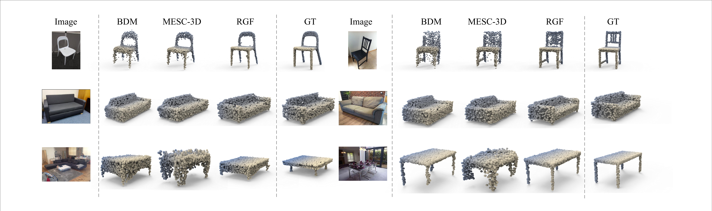